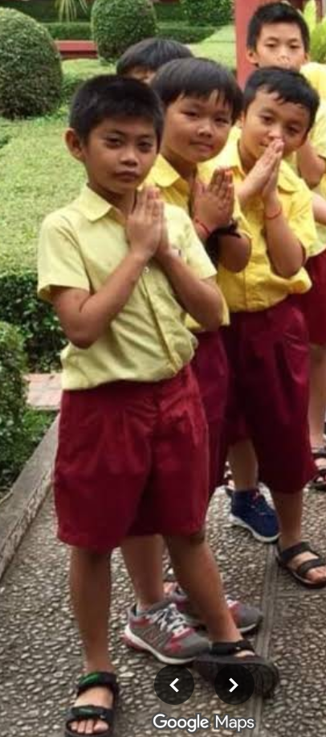

Hi, I am
UI & UX Designer
I create clean, intuitive, and effective digital products that enhance user engagement and build delightful experiences.
About me
Passionate UI/UX designer with a creative approach to crafting intuitive, engaging experiences that feel effortless on web and mobile.

My Design Service
Crafting visually engaging interfaces that are both effective and user-centered for digital products that feel polished and seamless.
Website Design
Responsive and elegant website layouts that reflect your brand and improve usability.
App Design
Interactive mobile experiences designed to feel natural and visually consistent.
Graphic Design
Brand visuals, campaign assets, and UI elements crafted with a strong design sense.
My portfolio
Explore a collection of UI/UX design projects created to deliver seamless, user-centered experiences.